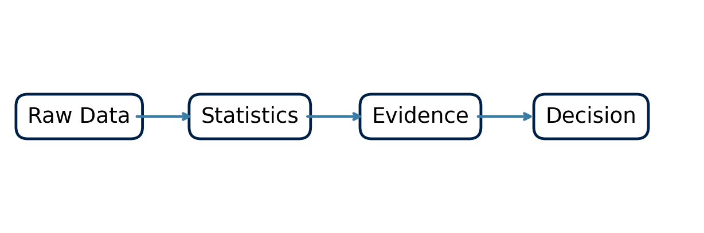
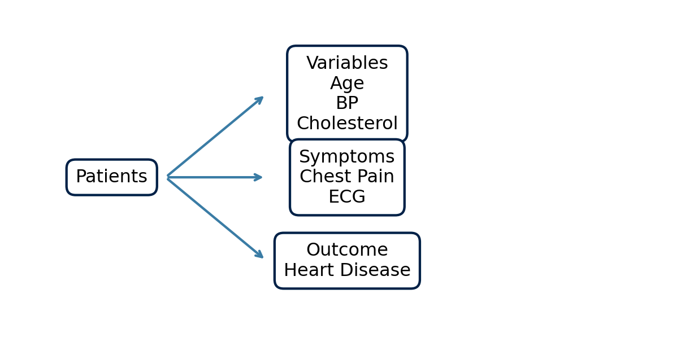
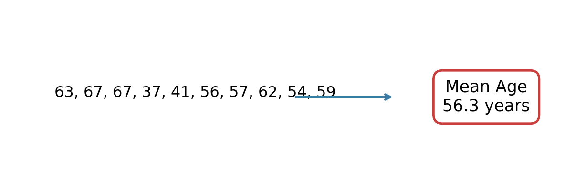
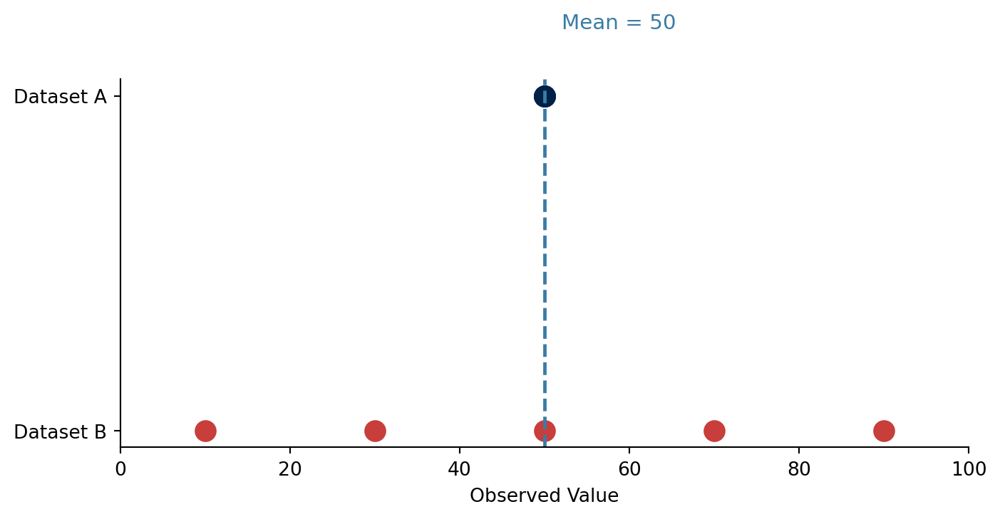
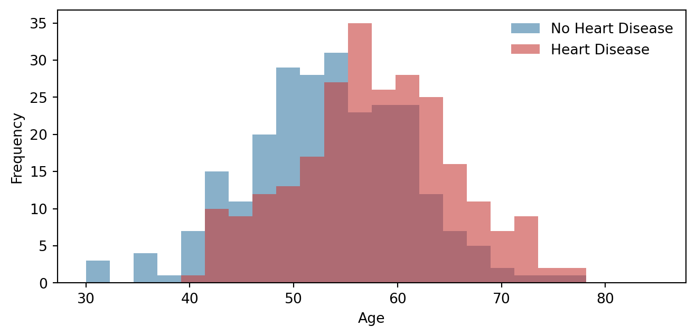
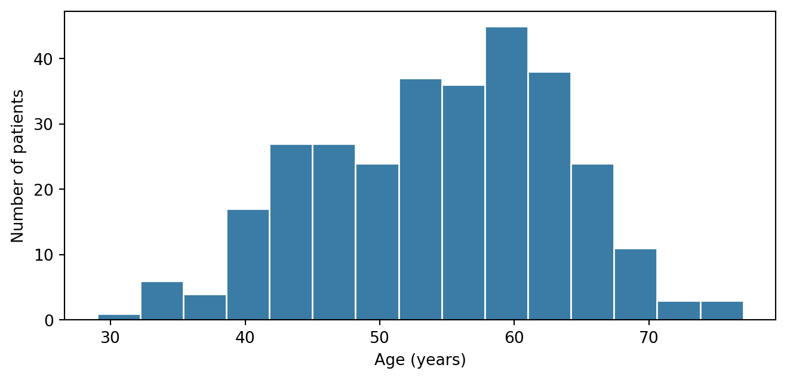
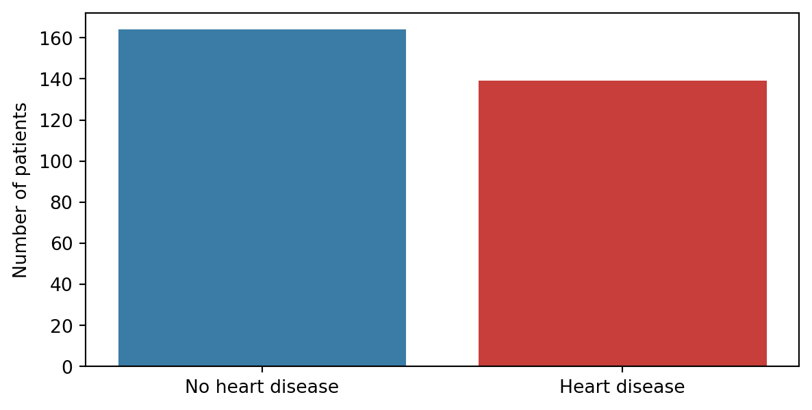

Why Biostatistics?
From clinical measurements to evidence
NoteClinical Question
When we collect measurements from patients, how do we turn those measurements into evidence?
From Data to Evidence
Biostatistics provides a framework for transforming raw clinical measurements into evidence that can support scientific understanding and clinical decision-making.
Modern biomedical engineering generates enormous amounts of data from clinical records, physiological measurements, medical imaging, wearable sensors, laboratory biomarkers, and electronic health records.
However, collecting data is only the first step. We need statistical methods to understand patterns, quantify uncertainty, compare groups, and identify meaningful relationships.
From Patients to Data
A clinical dataset is usually organised as a table. Each row corresponds to a patient, and each column corresponds to a variable measured for that patient.
| Patient | Age | Cholesterol | Blood Pressure | Heart Disease |
|---|---|---|---|---|
| 1 | 63 | 233 | 145 | Yes |
| 2 | 37 | 250 | 130 | No |
| 3 | 56 | 236 | 120 | Yes |
| … | … | … | … | … |
TipKey Idea
Biostatistics helps us move from individual patient measurements to statements about populations, disease processes, and clinical outcomes.
Visualising a Clinical Dataset
The table format is useful because it makes the structure of the data explicit: patients, variables, and outcomes.

Why Raw Data Are Not Enough
Suppose we collect the ages of ten patients:
63, 67, 67, 37, 41, 56, 57, 62, 54, 59Although these measurements contain useful information, it is difficult to understand the overall population simply by looking at a list of numbers.
Statistics allows us to summarise information efficiently.
From Raw Data to Summary

Statistics Compresses Information
One of the most common summary statistics is the sample mean:
[ {x} = _{i=1}^{n} x_i ]
where:
- (x_i) is an observation,
- (n) is the number of observations.
The mean provides a useful description of the centre of a dataset. However, averages do not tell the whole story.
Why Averages Are Not Enough
Consider two datasets:
| Dataset | Values | Mean |
|---|---|---|
| A | 50, 50, 50, 50, 50 | 50 |
| B | 10, 30, 50, 70, 90 | 50 |
Both datasets have the same mean, yet they clearly describe very different populations.
Same Mean, Different Variability

This observation motivates the need for measures of variability such as range, variance, standard deviation, and interquartile range.
From Description to Evidence
Suppose we observe:
| Group | Mean Age |
|---|---|
| Heart Disease | 58 years |
| No Heart Disease | 54 years |
A natural question arises:
Is this difference meaningful?
Or:
Could it simply have occurred by chance?
Comparing Two Groups

Visual inspection alone is rarely sufficient. We therefore need formal statistical methods to determine whether observed differences are likely to represent genuine effects.
A Preview of the Cleveland Dataset
From this point onwards, the module will use the processed Cleveland Heart Disease dataset as the running example.
The following figures are generated directly from the Cleveland data.


Even these simple plots already raise useful questions:
- What is the typical age of patients in this dataset?
- Are some age groups overrepresented?
- How balanced are the disease and non-disease groups?
- How might cohort composition affect statistical interpretation?
The remainder of the module will teach us how to answer such questions systematically.
Three Levels of Statistical Reasoning
1. Describe
What does the dataset look like?
Examples:
- means,
- medians,
- standard deviations,
- histograms,
- boxplots.
2. Compare
Are groups different?
Examples:
- confidence intervals,
- p-values,
- t-tests,
- non-parametric tests.
3. Model
How are variables related?
Examples:
- correlation,
- regression,
- prediction.
ImportantKey Takeaways
- Statistics transforms measurements into evidence.
- Clinical datasets consist of patients, variables, and outcomes.
- Summary statistics help us understand large amounts of data.
- Different datasets can have the same mean but very different variability.
- Statistical methods help us determine whether observed differences are meaningful.
- The rest of this module uses the processed Cleveland Heart Disease dataset as the main running example.
Next
Meet the Dataset